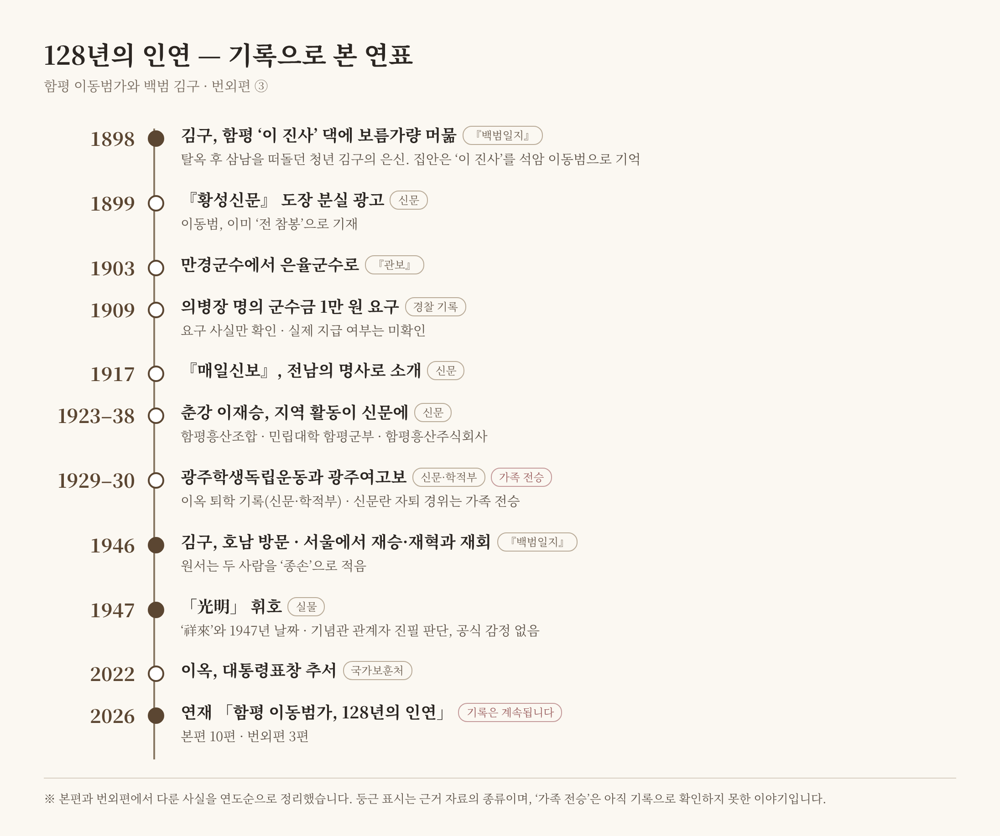

A 128-Year Bond: The Records Continue
The Lee Dong-beom Family of Hampyeong: A 128-Year Bond | Special Edition 3 (Final)
Kim Gu and the Lee Dong-beom family of Hampyeong
[EN] English edition · Translated from the Korean original · 한국어 원문
It began simply as a wish to put in order the stories handed down in our family. At first we had only the stories my father used to tell, a few old photographs, and a single framed piece of calligraphy.
Over the course of ten main parts and two special editions, we began to connect these stories, one by one, with historical sources such as genealogies, government gazettes, newspapers, police reports, maps, and school registers. Some things were confirmed, some had to be corrected, and some questions remain unanswered. In this final piece, I would like to look back on that process as a whole.

1. 1898: Two Weeks in Hampyeong
The story begins with a passage in Baekbeom Ilji, the autobiography of Kim Gu (金九, pen name Baekbeom). In 1898 the young Kim Gu, having escaped from Incheon Prison, wandered through the three southern provinces and arrived at the house of a "Jinsa Lee" (a jinsa was a licentiate of the classical civil service examination) in Hampyeong. He writes that a stay meant to last a single night stretched to about two weeks. Our family has long remembered that "Jinsa Lee" as my great-great-grandfather, Seok-am Lee Dong-beom (李東範).
The hexagonal pavilion (yukmojeong), the earthen dugout, and the attic loft that always come up when Kim Gu's stay in Hampyeong is discussed are places that must be examined in light of both the relevant passages of Baekbeom Ilji and our family tradition. Whether the buildings standing today are the same spaces as in 1898, however, remains to be verified.
2. Lee Dong-beom and the Record of 1909
Lee Dong-beom's career turned out to be fairly clearly recorded in the sources of his time. A notice about a lost seal in the Hwangseong Sinmun in 1899 already describes him as a former chambong (a low-ranking official post), and the Official Gazette (Gwanbo) of the Korean Empire records his transfer in 1903 from county magistrate of Mangyeong to county magistrate of Eunyul. In 1917 the Maeil Sinbo introduced him as a notable figure of South Jeolla Province.
We also found a police report from the summer of 1909. It states that a written dispatch, issued in the name of a Righteous Army (uibyeong) commander, demanding 10,000 won in military funds, was delivered to the house of "Lee Mangyeong" in the town of Hampyeong. What this record shows, however, is only that a demand was made. Whether any money was actually paid has not been confirmed by any record so far. A later book also contains testimony that he "contributed funds for independence, openly and in secret"; whether that refers to this demand likewise remains unknown.
3. Lee Jae-seung and the Reunion of 1946
The name of my great-grandfather, Chun-gang Lee Jae-seung (李載昇), appears several times in newspapers of the 1920s and 1930s. Traces of his involvement in local affairs remain under such titles as head of the Hampyeong Heungsan Cooperative, member of the Hampyeong County branch of the People's University (Minnip Daehak) movement, and adviser to Hampyeong Heungsan Co., Ltd.
In September 1946, the year after liberation, Kim Gu toured the Honam region and visited Hampyeong. Baekbeom Ilji records that he tried to find the house of his old benefactor but remembered it as being in Naju, and that two men, Jae-seung (在昇) and Jae-hyeok (在赫), whom the text calls the jongson of Jinsa Lee (a kinship term generally used for a grandson in the main line of descent), later came to see him in Seoul. The genealogy and a 1917 newspaper article, however, record the two as Lee Dong-beom's sons. In our reading, the word jongson is therefore an error in the original text. The place, date, and specific circumstances of the reunion in Seoul remain to be verified.
4. Gwangmyeong (光明), 1947
A piece of calligraphy reading Gwangmyeong (光明, "Bright Light"), bearing a date in 1947 and the characters 祥來, interpreted as the name of my grandfather Lee Sang-rae, is still kept in our family. Staff of the Kim Koo Museum & Library examined the original and judged it to be genuine, but it has not undergone a separate formal authentication. Where, and under what circumstances, the calligraphy was given also remains to be clarified.
Even so, the fact that the two weeks of 1898, the reunion of 1946, and the calligraphy of 1947 are linked in one family's memory was what carried this series through to the end.
5. Names Left in Land, Genealogy, and Stone
In Part 9 we found my great-grandfather's name, 李載昇, on an old original cadastral map, and in Part 10 we examined how far the phrase "3,000 seok" (a measure of rice; shorthand for a large landed fortune) is supported by records. When, and through what process, the family's wealth declined remains a matter of conjecture.
In Special Edition 1 we went further back and set out the records of Lee Bung-seo, our eighth-generation ancestor and the first generation of the head family house, followed by Lee Don-hwa (seventh generation), Lee Gyeong-heon (sixth generation), and Lee Gye-song (fifth generation). We examined the official titles listed in the genealogy, the inscriptions on gravestones, and the graves in Unnam-myeon, Muan County. Whether the entries in the genealogy correspond to actual appointments and terms of service is a question for further comparison.
6. The Women of the Family
According to family tradition, my grandmother Shin Mun-ran attended Gwangju Public Girls' Higher Common School (광주공립여자고등보통학교; a descriptive translation of the name of a girls' secondary school of the colonial period) and left around 1930. The circumstances still survive only in family memory. Lee Ok, who attended the same school and who, according to family accounts, was my grandmother's sister-in-law (her husband's sister), was recorded in a newspaper and a school register as having been expelled; in 2022 her participation in the Gwangju Student Independence Movement was recognized with a posthumous Presidential Commendation.
My grandfather's younger sister, Lee Hak, left a memoir that allows us today to read about my grandfather's youth. The three women pictured together left different traces in the historical record, but each of them lived through that era in her own place.
Looking back, this family's story does not stop at one person's deeds or one era's memories. Just as Lee Jae-seung's name appears in connection with the Hampyeong Heungsan Cooperative and the Hampyeong County branch of the People's University movement, the roles the elders played in their community and the ties they formed with others are preserved in a number of records. The women's lives, too, left their own traces through education and the independence movement, through art and writing. That legacy has continued through later generations. Hagwon Farm in Gochang, which Lee Hak began to reclaim and her son Jin Yeong-ho continued to develop, has today become a place of local festivals where fields of green barley and buckwheat spread out. As this series comes to an end, it strikes me anew that the lives of family members across generations have remained connected to their communities.
7. Questions the Records Have Not Yet Answered
Having put everything in order, the remaining questions have become clearer. Were the military funds of 1909 actually handed over? What did the "3,000 seok" estate look like, and how was it dispersed? How does the main building of the head family house standing today relate to the house of 1898? What were the date and the reasons for my grandmother's leaving school?
The answers may still lie somewhere in an archive, in old newspapers, or in the memories of another family. As things are confirmed, I will revise the earlier pieces and record the reasons for each revision.

8. Three Hopes We Have Come to Hold While Continuing the Record
While preparing this series, our family came to hold a few modest hopes.
The first is that the bond between Kim Gu and the Lee Dong-beom family of Hampyeong will not be forgotten, and will remain as a somewhat more accurate record. We hope that by comparing the stories handed down in our family with the documents of the time one by one, and by sharing the confirmed materials with relevant institutions and researchers, that bond will continue quietly into the future.
The second is that the old house remaining in Hampyeong, and the stories that dwell there, will be passed on for a long time. The mere fact that a house has stood for many years does not, of course, explain all of history. Still, we hope the traces and memories left in that space will be fully examined and that their meaning can be handed down to the next generation.[Note 1]
The third is that the lives of our elders will be understood a little more fully through the records they left. Looking one by one at what choices they made and how they lived in the circumstances of their times has been a meaningful process for us as descendants as well. Much has yet to come to light, but we hope the confirmed facts will serve as small clues to understanding their lives.[Note 2]
These hopes may not all be realized in the way we expect. As new materials are discovered, the stories we have known may change.
Even so, we believe there is meaning in itself in seeking out and reading old records and in gathering scattered photographs and documents in one place.
Above all, if this story does not remain only within our family's memory, and can be of some small help in understanding the people who lived in the same era and the history of the region of Hampyeong, we would be more than grateful.
9. In Closing
This story began 128 years ago, when one house took in a stranger, a young man on the run. That bond has crossed generations and remains in records and photographs, and in a single sheet of calligraphy.
What we hope for is not to embellish the past. It is to write what the records prove as the records prove it, and to leave what has not yet come to light as work still to be done.
My heartfelt thanks to everyone who has read along.
The ten main parts and three special editions end here, but the work of finding and keeping these records continues.
From a descendant of the Lee Dong-beom family of Hampyeong
[Note 1] Materials concerning the historical value and preservation potential of the Lee Dong-beom family house in Hampyeong have been submitted to the relevant authorities with a request for review. Any further survey or determination will follow the procedures of those authorities.
[Note 2] Materials on the activities of four people — Lee Dong-beom, Lee Jae-seung, Lee Sang-rae, and Shin Mun-ran — were compiled and submitted in November 2026 to the Ministry of Patriots and Veterans Affairs as an application for recognition of merit in the national independence movement. This refers only to the fact that the descendants have filed an application; whether any merit is recognized depends on the outcome of the official review.
Reference
Seoul Shinmun, April 26, 2011, "'I lost my entire fortune, but when I discovered landscape agriculture, hope…'" (interview with Jin Yeong-ho, head of Hagwon Farm, Gochang). [Korean]
Official interview, Kim Koo Museum & Library [Korean]
https://www.youtube.com/watch?v=NZlIOjAmNzg
See also
- Full archive (English): https://lsaru23-ai.github.io/hp-db-archive/en/
- Full archive (Korean): https://lsaru23-ai.github.io/hp-db-archive/
- X @hp_db_archive https://x.com/hp_db_archive
- Threads @hp_db_archive https://www.threads.com/@hp_db_archive
The complete series (English edition)
- Part 1: Who Was "Jinsa Lee"? — Kim Gu and the Lee Dong-beom Family of Hampyeong https://lsaru23-ai.github.io/hp-db-archive/en/post1.html
- Part 2: Why He Stayed Two Weeks — Hiding in Hampyeong, 1898 https://lsaru23-ai.github.io/hp-db-archive/en/post2.html
- Part 3: The 1946 Reunion and Gwangmyeong — A Bond Kim Gu Sought Out Again https://lsaru23-ai.github.io/hp-db-archive/en/post3.html
- Part 4: The Head Family House and the Lee Jae-hyeok House — 128 Years in Two Homes https://lsaru23-ai.github.io/hp-db-archive/en/post4.html
- Part 5: Seok-am Lee Dong-beom — The Life of "Jinsa Lee" https://lsaru23-ai.github.io/hp-db-archive/en/post5.html
- Part 6: Chun-gang Lee Jae-seung — The Eldest Son Who Carried On the Head Family https://lsaru23-ai.github.io/hp-db-archive/en/post6.html
- Part 7: Lee Sang-rae — The Grandson Whose Name Appears on Gwangmyeong https://lsaru23-ai.github.io/hp-db-archive/en/post7.html
- Part 8: Shin Mun-ran — The Daughter-in-Law Who Left School Around 1930 https://lsaru23-ai.github.io/hp-db-archive/en/post8.html
- Part 9: A Name on the Map — "李載昇" on the Original Cadastral Map of Gigak-ri https://lsaru23-ai.github.io/hp-db-archive/en/post9.html
- Part 10: Where Did the 3,000 Seok Go? — What the Records Say and Do Not Say https://lsaru23-ai.github.io/hp-db-archive/en/post10.html
- Series Notice: Pausing for Breath — After Ten Parts https://lsaru23-ai.github.io/hp-db-archive/en/notice.html
- Special Edition 1: The Ancestors of Seok-am Lee Dong-beom https://lsaru23-ai.github.io/hp-db-archive/en/ex1.html
- Special Edition 2: The Women of the Lee Dong-beom Family https://lsaru23-ai.github.io/hp-db-archive/en/ex2.html
This English edition is a translation of the Korean historical archive. The Korean original remains the authoritative version. Documentary evidence, family recollections, and unresolved questions are distinguished throughout.
Chinese characters given in parentheses after names and source titles are supplied for identification; they are not quotations from the original documents unless shown in quotation marks.